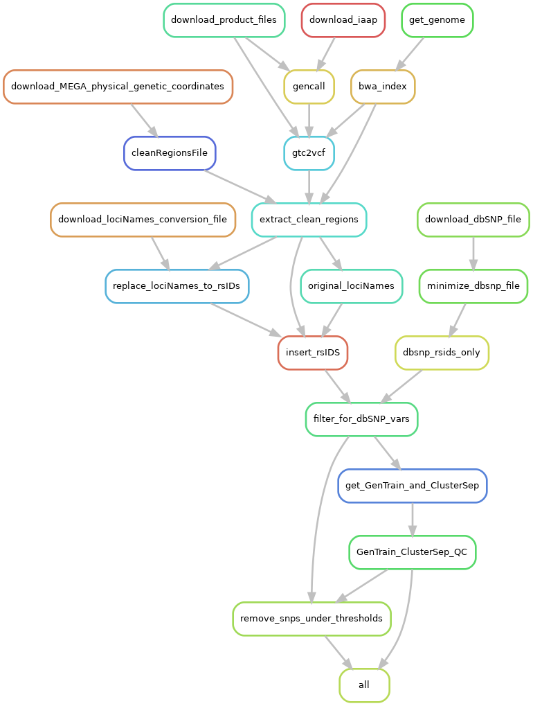

Iliad SNP Array
TL;DR setup
Input |
Output |
IDAT data |
quality-controlled VCF |
Please make sure that your conda environment for Iliad is activated - conda activate iliadEnv or mamba activate iliadEnv
Modify the configuration file workdirPath parameter to the appropriate path leading up to and including /Iliad and a final forward slash e.g. /Path/To/Iliad/.
The configuration file is found in config/config.yaml.
#####################################
#####################################
#####################################
# # # USER INPUT VARIABLES # # #
#####################################
#####################################
#####################################
# You must insert your /PATH/TO/Iliad/
# use 'pwd' command to find your current working directory when you are inside of Iliad directory
# e.g. /path/to/Iliad/ <---- must include forward slash at the end of working directory path
# must include forward slash, '/', at the end of working directory path
workdirPath: /Insert/path/to/Iliad/
You might consider changing some other parameters to your project needs that are pre-set and include:
Homo sapiens GRCh38 release 104 reference genome
ref:
species: homo_sapiens
release: 104
build: GRCh38
Illumina MEGA microarray GRCh38 support and product files
urlProductFiles:
manifest: https://webdata.illumina.com/downloads/productfiles/multiethnic-global-8/v1-0/build38/multi-ethnic-global-8-d2-bpm.zip
mzip: multi-ethnic-global-8-d2-bpm.zip
cluster: https://webdata.illumina.com/downloads/productfiles/multiethnic-global-8/v1-0/infinium-multi-ethnic-global-8-d1-cluster-file.zip
czip: infinium-multi-ethnic-global-8-d1-cluster-file.zip
urlSupportFiles:
physicalGeneticCoordinates: https://support.illumina.com/content/dam/illumina-support/documents/downloads/productfiles/multiethnic-global/multi-ethnic-global-8-d2-physical-genetic-coordinates.zip
pzip: multi-ethnic-global-8-d2-physical-genetic-coordinates.zip
rsidConversion: https://support.illumina.com/content/dam/illumina-support/documents/downloads/productfiles/multiethnic-global/multi-ethnic-global-8-d2-b150-rsids.zip
rzip: multi-ethnic-global-8-d2-b150-rsids.zip
rfile: Multi-EthnicGlobal_D2_b150_rsids.txt
Place your data into the /Iliad/data/snp_array/idat/ directory.
Since this module is NOT the main snakefile, Snakemake will NOT automatically detect it without the --snakefile flag.
(Please make sure that your conda environment for Iliad is activated - conda activate iliadEnv or mamba activate iliadEnv)
$ snakemake --snakefile workflow/snpArray_Snakefile --cores 1
and combined with other user-specified snakemake flags such as --cores.
If you plan to use on a local machine or self-built server without a job scheduler the default command to run is the following:
$ snakemake -p --use-singularity --use-conda --snakefile workflow/snpArray_Snakefile --cores 1 --jobs 1 --default-resource=mem_mb=10000 --latency-wait 120
However, there is a file included in the Iliad directory named - snpArray-snakemake.sh that will be useful in batch job submission.
Below is an example snakemake workflow submission in SLURM job scheduler.
Please read the shell variables at the top of the script and customize to your own paths and resource needs.
$ sbatch snpArray-snakemake.sh
If you would like more in-depth information and descriptions, please continue to the next sections below. Otherwise, you have completed the TL;DR setup section.
Information
This tutorial introduces the genome-wide SNP array data processing module of the Iliad_ workflow developed using Snakemake workflow language.
Please visit Snakemake for specific details. They also provide informational slides. In general, though, each module is composed of rules. These rules define how output files are generated from input files while
automatically determining dependencies amongst the rules. A DAG (directed acyclic graph) of jobs will be built each time to account for all of the samples and jobs
that will executed either via job scheduler or local cores and will execute in parallel if multiple jobs are declared.
Because of the Snakemake workflow system design, the Iliad workflow is scalable from single core machines to HPC clusters with job schedulers.
The SNP array module is designed to process target data in your lab. Iliad is currently limited to Illumina microarray raw data processing and is configured for the human genotyping Infinium Multi-Ethic Global-8 Kit (MEGA). We ensured no bioinformatics knowledge is needed to run this module with the help of external test runs performed on Google Cloud Platform (GCP).
SNP Array Module Rule Graph
{kind=link}
Background
Genome-wide microarray data remains one of most widely used methods to obtain genotypic information on collected DNA samples, despite the
growing popularity and accessibility of genotyping by sequencing.
To make a comprehensive genomic pipeline,
we wanted to provide the means necessary for researchers to still access such a large body of data that remains important for many analyses.
GWAS data can be used in many more applications than gene identification, such as ancestry estimation,
historical population reconstruction, clinical genetic testing for diagnostic purposes, forensic analyses, and new method validation for sequencing data.
This module is currently limited to Illumina microarrays on the basis of the software tools and support and product file downloads. It is configured to the MEGA microarray, meaning download files are pointed to MEGA support files and product files. It does possess the capability to be adapted to other microarrays. Pull requests and contributions are welcomed.
Basics
The raw files from an Illumina sequencer are bead array files found in raw intensity data .idat format.
These .idat files are to be converted into Genotype Call .gtc files using iaap-cli software. This software does have an
end-user license agreement (EULA) and is not included or distributed by Iliad. If the user chooses to configure a download of the
program, it will be downloaded, independent from the Iliad repository distribution.
The .gtc files are converted to a .vcf using bcftools plug-in gtc2vcf.
This requires a reference genome assembly and Iliad downloads the user-configured reference genome fasta files.
Iliad is configured to download Homo sapiens GRCh38 release 104 as default.
Processing the .vcf is critical for realistic genetic data compatibility.
Custom python scripts are called in rules to rename unconventional loci names to standardized rs IDs using dbSNP files.
The default configuration file is set to download human_9606_b151_GRCh38p7 All_20180418.vcf.gz.
Once the vcf is processed, quality controls are performed based on the GenTrain and ClusterSep scores.
Default thresholds, along with other default workflow configurations, can be found in your path to the configuration file: config/config.yaml.
In-depth Setup
Once the Installation of Iliad and its two dependencies has been completed,
you will find your new working directory within the PATH/TO/Iliad folder.
Make sure your current working directory is in this cloned repo as stated in the installation.
If the repository is not cloned in that fashion, there is a chance that your direcory will be improperly named as Iliad-main.
$ cd Iliad
In that working directory you will find there are a number of directories with files and code to run each of the module pipelines.
FIRST,
there is a data/snp_array/idat directory with a readme.md file. You must place all of your .idat files in this folder.
There should be two .idat files for each sample: one green _Grn.idat and one red _Red.idat.
SECOND,
there is a configuration file with some default parameters, however, you MUST at least change the workdirPath parameter to the appropriate
path leading up to and including /Iliad e.g. /Path/To/Iliad/. The configuration file is found in config/config.yaml.
workdirPath: /Path/To/Iliad/
Some other parameters that are pre-set and you might consider changing to your project needs include:
Homo sapiens GRCh38 release 104 reference genome
ref:
species: homo_sapiens
release: 104
build: GRCh38
Illumina MEGA microarray GRCh38 support and product files
urlProductFiles:
manifest: https://webdata.illumina.com/downloads/productfiles/multiethnic-global-8/v1-0/build38/multi-ethnic-global-8-d2-bpm.zip
mzip: multi-ethnic-global-8-d2-bpm.zip
cluster: https://webdata.illumina.com/downloads/productfiles/multiethnic-global-8/v1-0/infinium-multi-ethnic-global-8-d1-cluster-file.zip
czip: infinium-multi-ethnic-global-8-d1-cluster-file.zip
urlSupportFiles:
physicalGeneticCoordinates: https://support.illumina.com/content/dam/illumina-support/documents/downloads/productfiles/multiethnic-global/multi-ethnic-global-8-d2-physical-genetic-coordinates.zip
pzip: multi-ethnic-global-8-d2-physical-genetic-coordinates.zip
rsidConversion: https://support.illumina.com/content/dam/illumina-support/documents/downloads/productfiles/multiethnic-global/multi-ethnic-global-8-d2-b150-rsids.zip
rzip: multi-ethnic-global-8-d2-b150-rsids.zip
rfile: Multi-EthnicGlobal_D2_b150_rsids.txt
THIRD,
each module pipeline has a specific Snakefile.
Snakemake will automatically detect the main snakefile, which is named excatly as such and found in the workflow directory: workflow/Snakefile.
Iliad reserves the main snakefile for the main module, specifically the raw sequence read data module.
This means the user must specify which Snakefile will be invoked with the following:
$ snakemake --snakefile workflow/snpArray_Snakefile
and combined with other user-specified snakemake flags, of course, like --cores.
In this module, the SNP Array Snakefile is also located in the workflow directory: workflow/snpArray_Snakefile.
Users must invoke this snpArray_Snakefile in order to run the workflow for This SNP ARRAY MODULE.
If you plan to use on a local machine or self-built server without a job scheduler the default command to run is the following:
$ snakemake -p --use-singularity --use-conda --cores 1 --jobs 1 --snakefile workflow/snpArray_Snakefile --default-resource=mem_mb=10000 --latency-wait 120
However, there is a file included in the Iliad directory named - snpArray-snakemake.sh that will be useful in batch job submission.
Below is an example snakemake workflow submission in SLURM job scheduler.
Please read the shell variables at the top of the script and customize to your own paths and resource needs.
$ sbatch snpArray-snakemake.sh